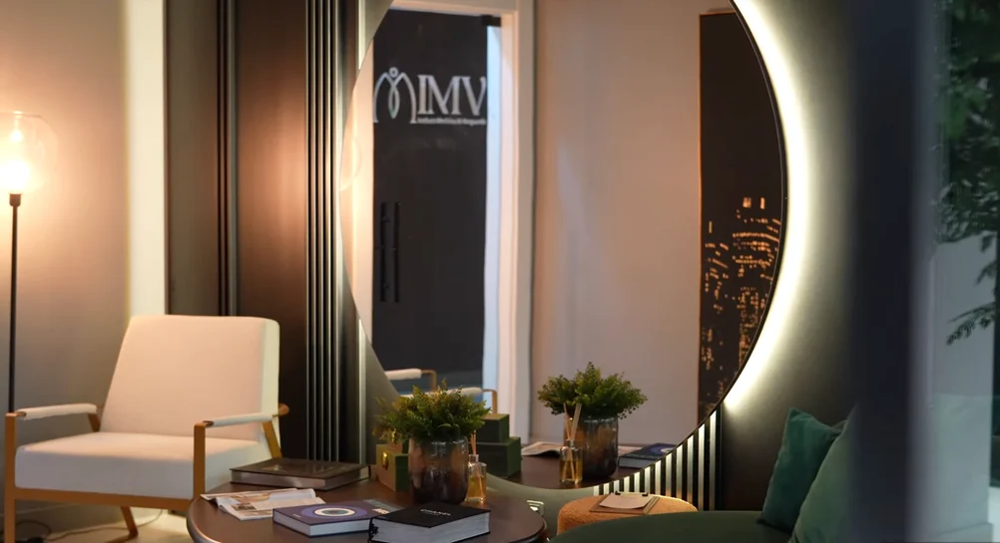

Florianópolis · SC
Agendar em Florianópolis
IMV — Instituto Medicina de Vanguarda
- Endereço
- [ENDERECO_IMV]
- Horários
- [HORARIOS_FLORIANOPOLIS]
Mapa e horários entram assim que o endereço for confirmado.
O agendamento é feito pelo WhatsApp da clínica. Escolha a cidade em que deseja ser atendida.

Florianópolis · SC
IMV — Instituto Medicina de Vanguarda
Mapa e horários entram assim que o endereço for confirmado.
São Paulo · SP
Clínica Fakiani
Mapa e horários entram assim que o endereço for confirmado.
A mensagem inicial serve apenas para marcar a consulta. Não envie sintomas, exames, fotos ou detalhes de saúde por esse canal: essas informações são tratadas presencialmente, na avaliação médica. Veja a Política de Privacidade.